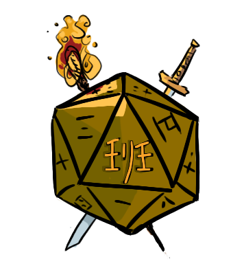

The Gamu
The Players
Zerod
Cliffracer
Knite
Jim
Noet
Characters
Below are the pregenerated lvl0 characters!
There are 12 sets of 4,
you pick one set(First come first serve). Those are the four characters you play in the first session.
Afterwards you can pick your main character from the survivors!
Character Sets